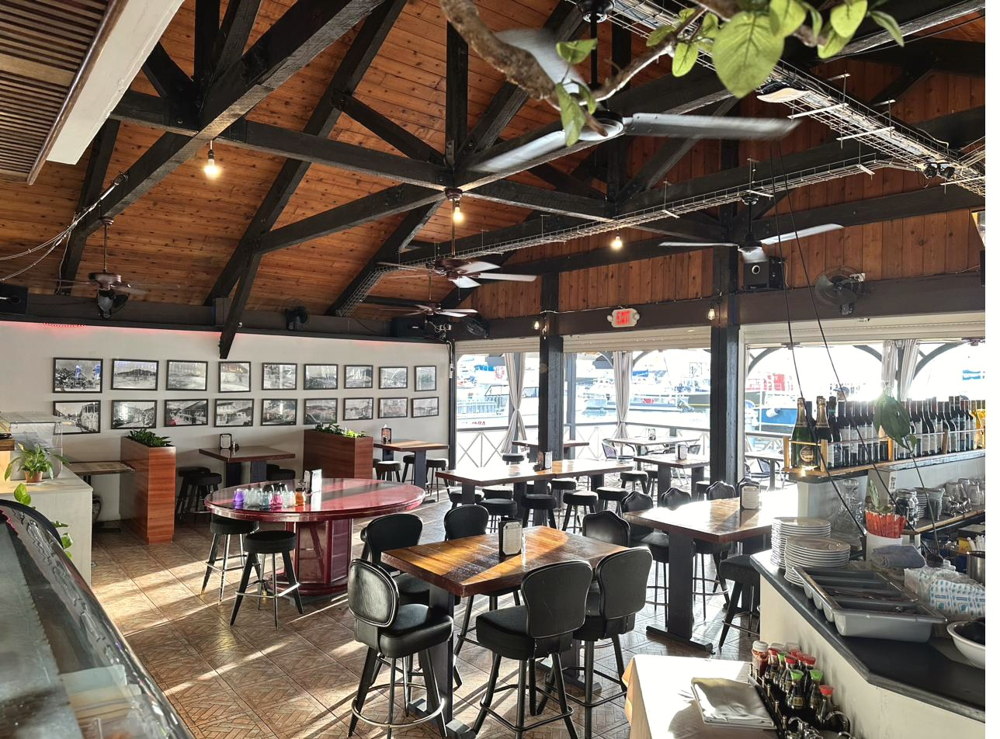
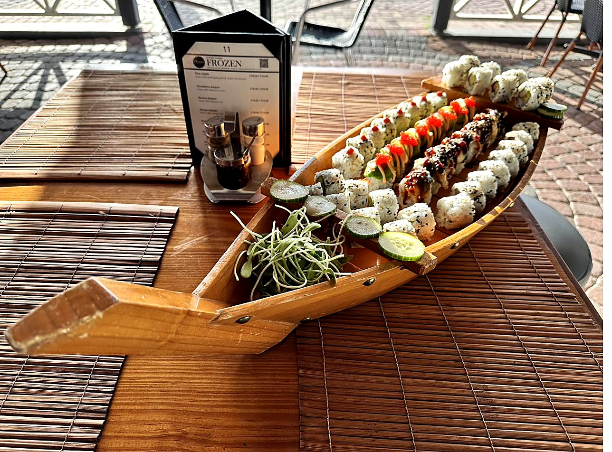
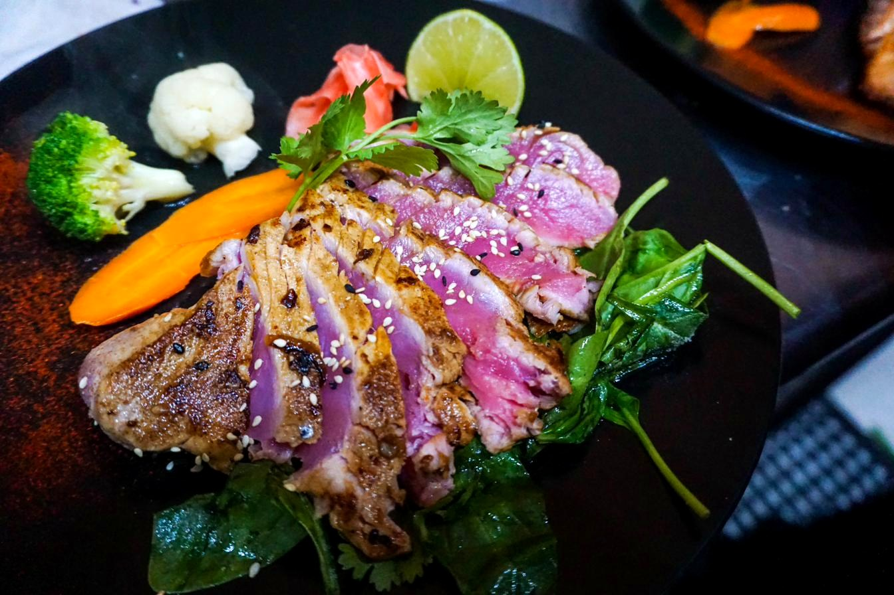
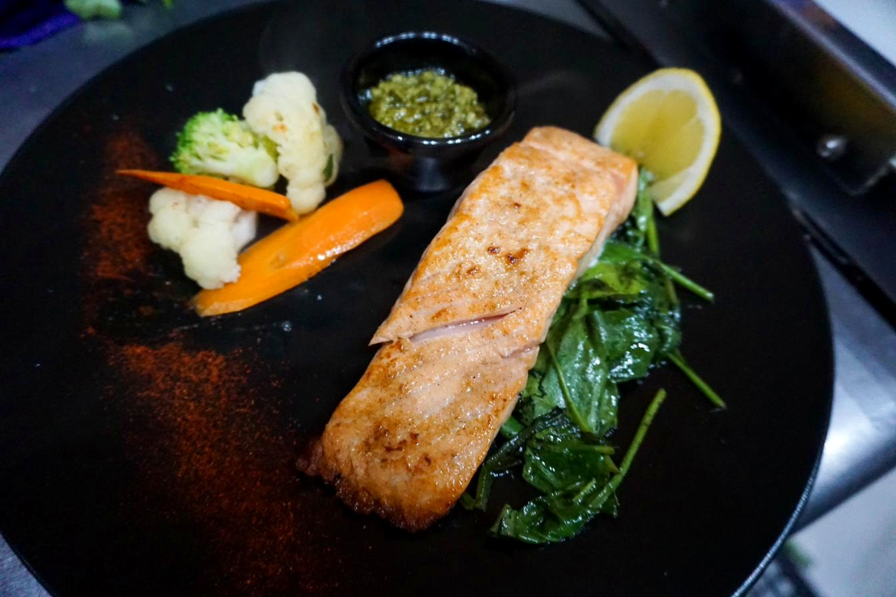
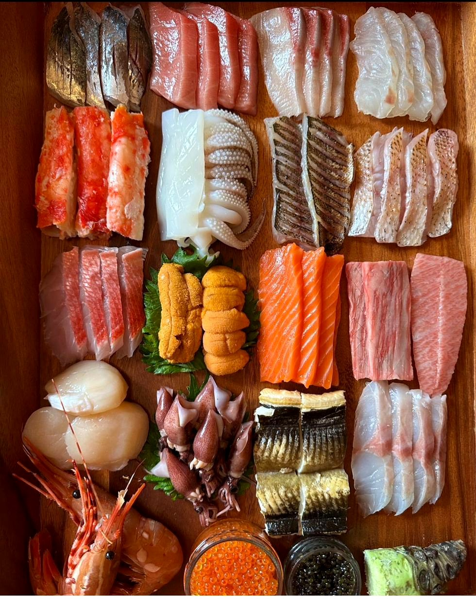
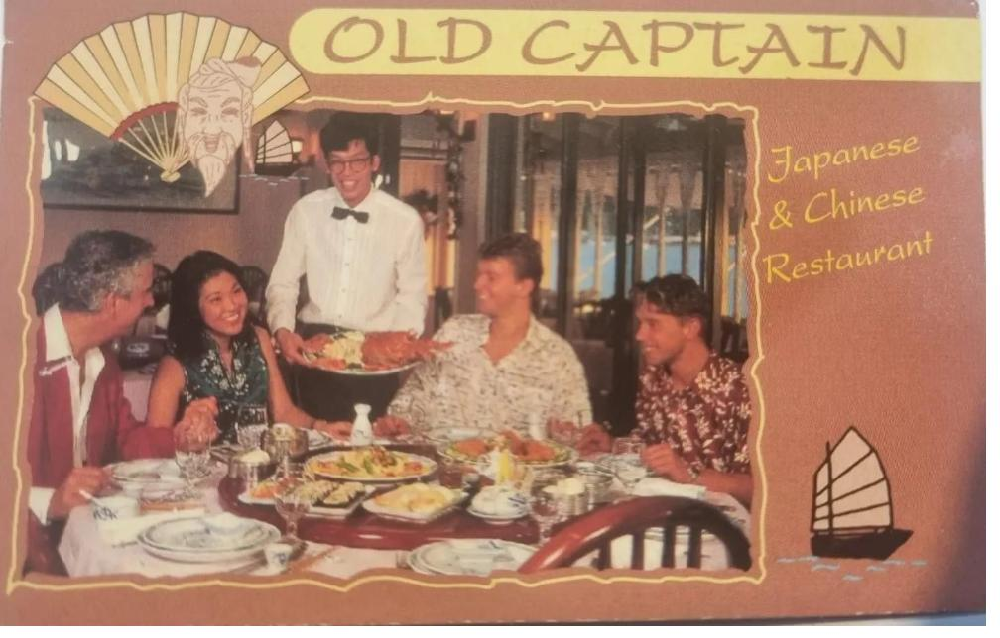
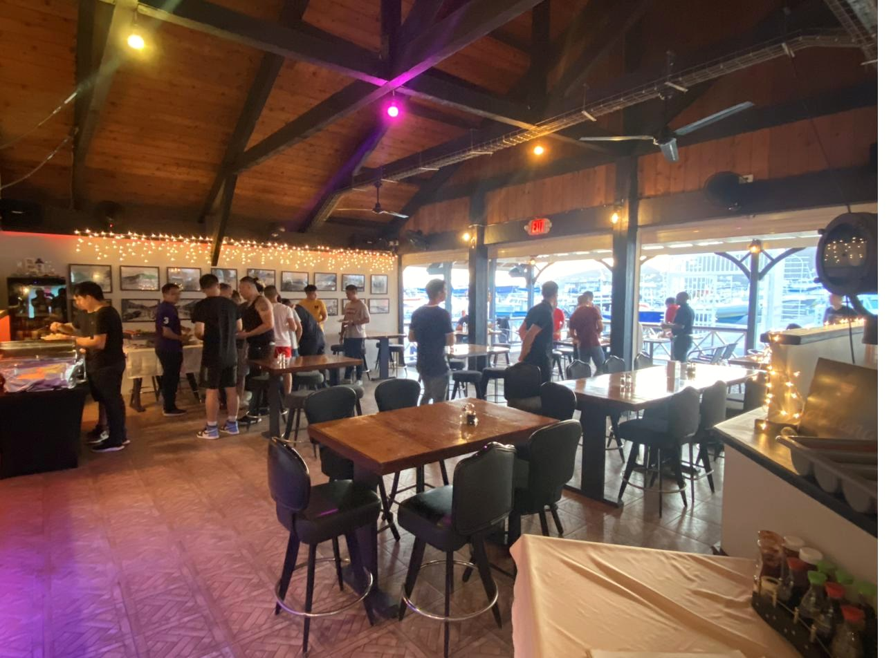
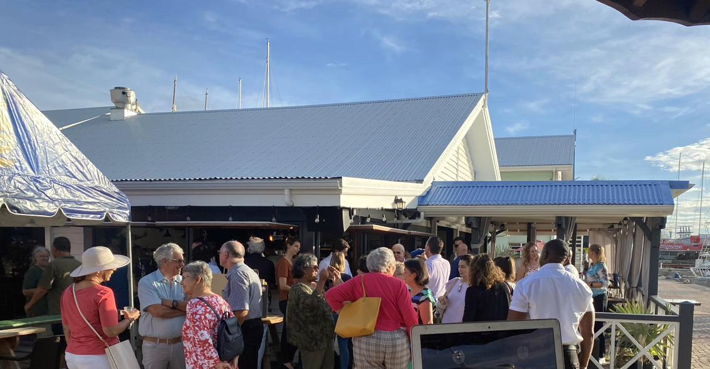
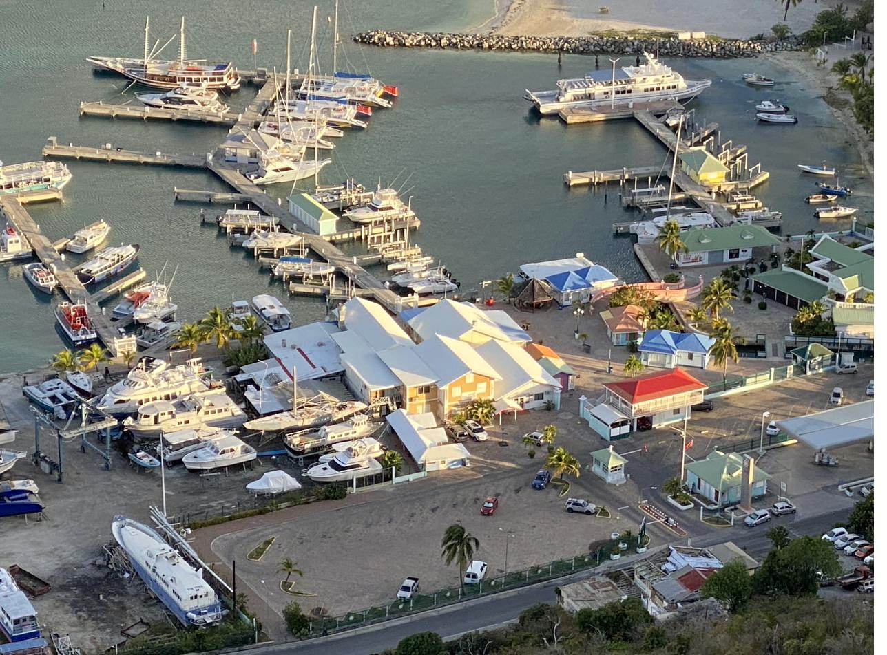

The house signature
Aziana's Snack Platter
Chicken wings, shrimp tempura, fried mussels, chicken satay, vegetarian spring rolls — with sweet chili and peanut sauces. A taste of the whole menu in one order, made for two.
Aziana at Bobby's Marina.

A wood-beamed dining room hung with the photographs of old Philipsburg, breezy and open to the marina beyond its windows — particularly enchanting as the sun lowers over the bay.
Sushi cut to order, fresh seafood from the boats outside, steaks from a grill that knows what it's doing — and the Chinese-Indonesian dishes our kitchen has cooked since 1995. These are the ones we'd recommend first.
Chicken wings, shrimp tempura, fried mussels, chicken satay, vegetarian spring rolls — with sweet chili and peanut sauces. A taste of the whole menu in one order, made for two.
Pork fried rice topped with egg, slow-roasted Indonesian-spiced pork, and two skewers of grilled chicken satay. The Chinese-Indonesian dish that defined Old Captain in 1995, still cooked the same way.


Salmon, tuna, and snapper over rice, with cucumber, avocado, wakame, and tobiko. The bowl that earns its name.


In 1995, Molly and Mario opened Old Captain in Great Bay, Philipsburg, and quietly introduced sushi and Chinese-Indonesian cooking to an island that had seen neither. Their kitchen changed how Philipsburg ate.
The work continued through the restaurants that followed, and in 2018 it continued again at Bobby's Marina, under the name Aziana — the family's latest chapter, written in the same hand.
To dine here is to step into that legacy, and to add a chapter to it.

Weddings, birthdays, corporate evenings — at the table, on the porch, or on the square outside. We design the menu and the room around what you have in mind.
Inquire →

